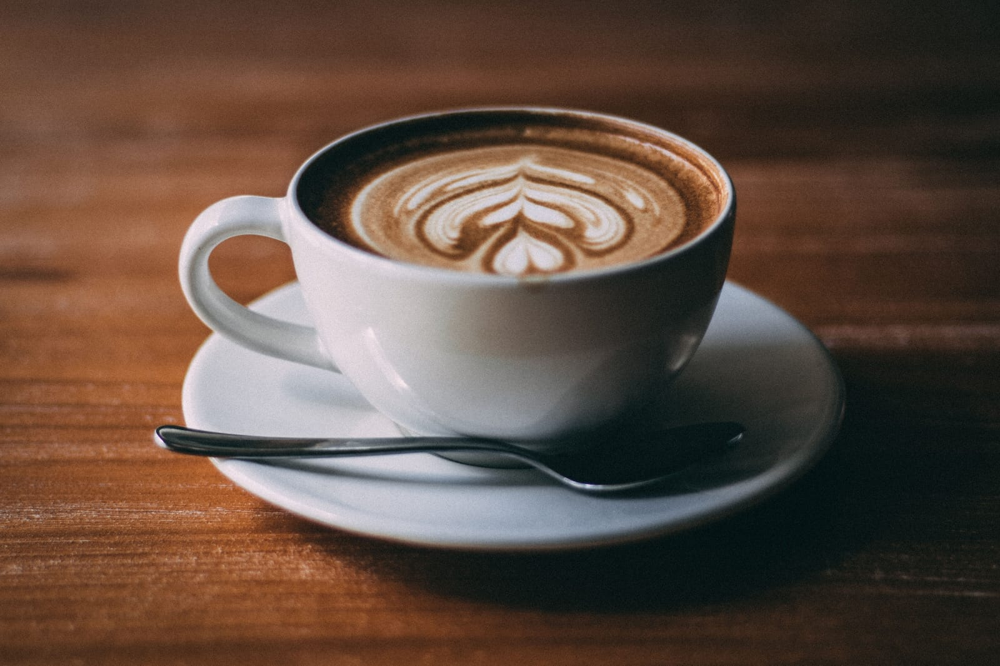

About Our Cafe and Lounge

Welcome to Cozy Corner Café & Lounge
At Cozy Corner, we believe that coffee is more than a drink — it’s an experience. Nestled in the heart of the city, our café & lounge is a haven for Coffee lovers, food enthusiasts , and anyone looking for a warm, relaxing spot to unwind.
We serve the finest coffee, brewed from premium, freshly roasted beans, designed to delight your senses in every sip. But that’s not all — our menu features a variety of freshly baked pastries, sandwiches, cakes, and desserts, all made daily with the finest ingredients to ensure taste and freshness.
From buttery croissants to indulgent chocolate cakes, there’s something for everyone.
Every detail, from the aroma of brewing coffee to the comfortable seating and ambient décor, is crafted to make your visit memorable.
Beyond coffee and treats, we take pride in offering seasonal specials and unique drinks that keep our menu exciting.
From fruity iced beverages in the summer to rich, comforting hot chocolates in the winter, there’s always something new to try.
We also value community and connection. Our lounge hosts small events, casual meetups, and tasting sessions so that coffee lovers can come together, share experiences, and discover new flavors.
Whether you’re here for a quick pick-me-up, a leisurely brunch, or an afternoon of work and relaxation, Cozy Corner Café & Lounge is your destination for quality, comfort, and a little bit of indulgence. Every cup, every bite, and every moment is designed to leave you smiling and coming back for more.